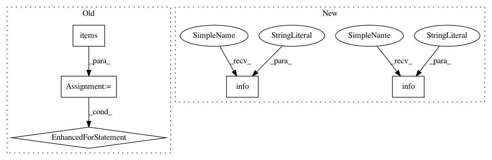

aab60f7a1b5bc8cbeaeb37c036387bcf8cc9556c,dask_ml/wrappers.py,ParallelPostFit,fit,#ParallelPostFit#Any#Any#,80
Before Change
result = self.estimator.fit(X, y, **kwargs)
// Copy over learned attributes
attrs = {k: v for k, v in vars(result).items() if k.endswith("_")}
for k, v in attrs.items():
setattr(self, k, v)
return self
def transform(self, X):
Transform block or partition-wise for dask inputs.
After Change
self : object
start = tic()
logger.info("Starting fit")
result = self.estimator.fit(X, y, **kwargs)
stop = tic()
logger.info("Finished fit, %0.2f", stop - start)
// Copy over learned attributes
copy_learned_attributes(result, self)
copy_learned_attributes(result, self.estimator)
In pattern: SUPERPATTERN
Frequency: 3
Non-data size: 5
Instances
Project Name: dask/dask-ml
Commit Name: aab60f7a1b5bc8cbeaeb37c036387bcf8cc9556c
Time: 2018-06-06
Author: TomAugspurger@users.noreply.github.com
File Name: dask_ml/wrappers.py
Class Name: ParallelPostFit
Method Name: fit
Project Name: dask/dask-ml
Commit Name: aab60f7a1b5bc8cbeaeb37c036387bcf8cc9556c
Time: 2018-06-06
Author: TomAugspurger@users.noreply.github.com
File Name: dask_ml/wrappers.py
Class Name: ParallelPostFit
Method Name: fit
Project Name: dpressel/mead-baseline
Commit Name: 2e6649beaded3205655769811150df65cbf6514e
Time: 2020-06-12
Author: blester125@users.noreply.github.com
File Name: mead/pytorch/exporters.py
Class Name: PytorchONNXExporter
Method Name: _run
Project Name: kubeflow/kubeflow
Commit Name: 7f64d8b023147927b74139bbdbbffa1ffca536bc
Time: 2019-10-30
Author: jeremy+github@lewi.us
File Name: py/kubeflow/kubeflow/ci/kfctl_go_test_utils.py
Class Name:
Method Name: get_config_spec